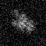
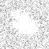
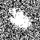

最小
最大
平均値
標準偏差
標準誤差
-65.0178
94.4699
4.85274
20.4635
0.255794
| オプション | 必須項目/選択項目 | NULL | デフォルト |
|---|---|---|---|
| -i | 必須 | 入力ファイル設定 | NULL |
| -o | 必須 | 出力ファイル設定 | NULL |
| -Min | 選択 | 最小値を設定 | 0.0 |
| -Max | 選択 | 最大値を設定 | 1.0 |
| -m | 選択 | モード | |
| -h | 選択 | ヘルプを表示 |
| モード | 説明 |
|---|---|
| 0 | １バイト（cher） |
| 2 | ４バイト（float） |
|
最小 |
-65.0178 |
 |
最小 |
0 |
|  | 最小 |
0 |
|  | 最小 |
0 |
|  | 最小 |
0 |